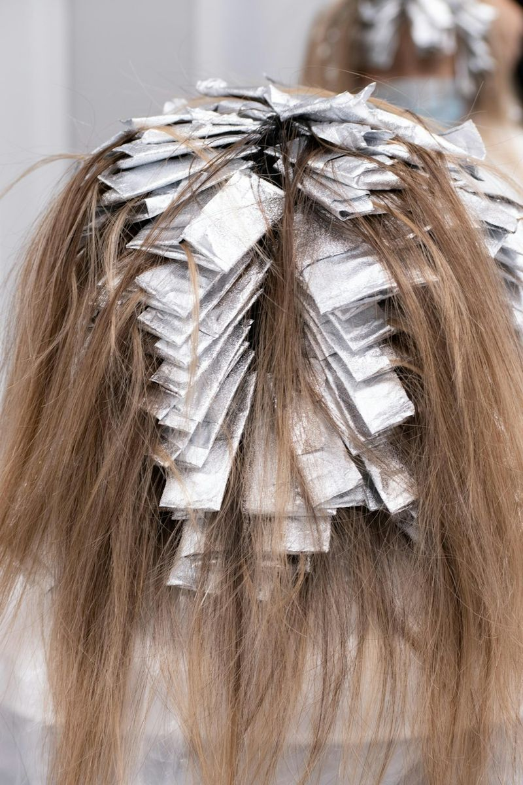
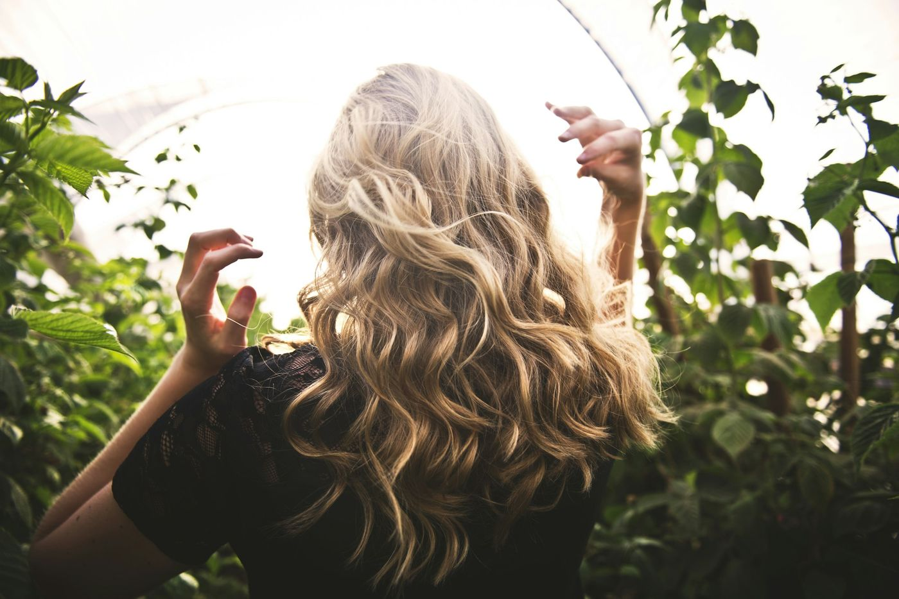
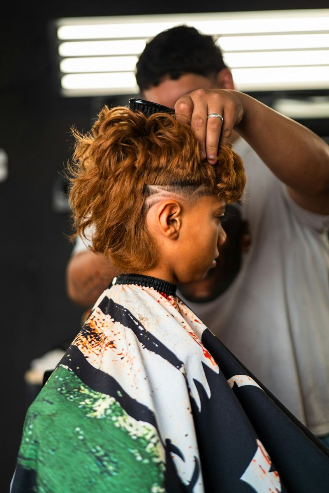
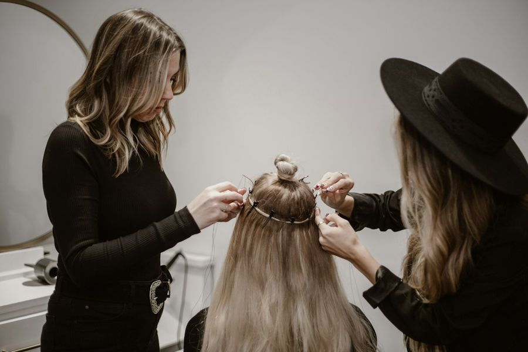

From box black to soft bronde
Three years of at-home black dye, lifted gently over two sessions with bond repair at every step, then glossed to a warm, even bronde.
Upkeep: a gloss every eight weeks, highlights twice a year.
Recent work from our chairs
Cuts, color, barbering and styling from the past season. Filter by what you're after, then open any photo for a closer look and the name of the look to ask for.

Browse the work
Behind the chair
What it actually took — the time, the technique and the upkeep — so you know what to expect from a bigger change.

Three years of at-home black dye, lifted gently over two sessions with bond repair at every step, then glossed to a warm, even bronde.
Upkeep: a gloss every eight weeks, highlights twice a year.

Amara brightened his natural curls to copper, then Mateo carved a low taper and a single part line so the color sits like a crown.
Upkeep: taper every three weeks, color refresh every ten.

A loose halo braid built to survive an outdoor ceremony: tested at the trial with her veil, then recreated in 50 minutes on the day.
Kept in place: eight hours, one rainstorm and a lot of dancing.
Bring a reference
Two photos you love and one you don't tell us more than an entire moodboard.
Look for hair like yours — a curly cut photographed on straight hair won't behave the same way.
Color photos are often filtered. Daylight shots help us see the real shade you're after.
If you style in five minutes, say so. We'll adapt the look so it still works on day two.
Know what to ask for
Several looks in the gallery have a near-twin with a different name and a very different upkeep. Here's how to tell them apart, so you ask for exactly what you saw.
Cuts
Ends between the ear and the jaw. Crisp and structured, so the shape starts to drift as it grows.
A “long bob” that sits between the jaw and the collarbone. Long enough to tie back, and it grows out gracefully.
Color
Fine sections are lightened in foil right from the root. Even, all-over brightness, with a clear regrowth line later on.

Painted freehand on the surface, soft at the root and brighter toward the ends. It grows out without a hard line.
Barbering

The sides and back blend down to skin, or close to it — set high, mid or low. Sharp contrast that grows out fast.
Length shortens gradually only at the sideburns and neckline, so the sides keep more hair. Softer and more forgiving.
Styling
Each braid starts with a small knot of extension hair at the root, for crisp, square parts and fullness from day one.
Your own hair is braided first, then extensions are fed in gradually. Flatter at the root and gentler on the scalp.
Mention it by name in your booking notes and we'll tell you what it takes to get there — time, upkeep and price.